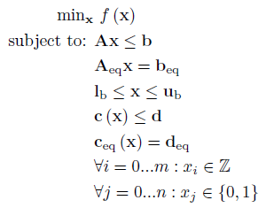
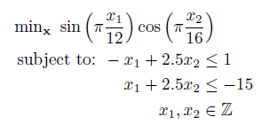
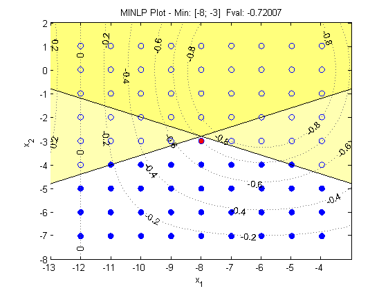

Mixed Integer Nonlinear Program (MINLP)
Introduction
A mixed integer nonlinear program has the following form:

Where f is a function containing the nonlinear objective function, which is subject to the following constraints:
Linear Inequalities*
A is a m x n
sparse matrix, b is a m x 1 vector
Linear Equalities*
Aeq is a k x n sparse matrix, beq
is a k x 1 vector
Decision Variable Bounds
lb and ub are n x 1 vectors,
where -inf or inf indicate an unbounded lower or upper bound, respectively
Nonlinear Inequalities*
c is a m x 1 vector of functions containing nonlinear
inequality constraints, d is a m x 1 vector
Nonlinear Equalities*
ceq is a k x 1 vector of functions
containing nonlinear equality constraints, deq
is a k x 1 vector
Integer Constraints
xi are decision variables
which must be a integer number (...-2, -1, 0, 1, 2...)
Binary Constraints
xj are decision variables which must be a binary number (0,1), where
i ≠ j.
The goal is to minimize the objective function by selecting a value of x that also satisfies all constraints.
*Your problem description will either use Linear / Nonlinear Inequalties and Linear Equalities OR Linear / Nonlinear Row Constraints. See the constraint information page.
Example Problem

The above contains a nonlinear objective function which should be written as Matlab function or anonymous function. All constraints are linear so we can use standard matrix notation:
% Objective Function
obj = @(x) sin(pi*x(1)/12) * cos(pi(x(2)/16);
%Constraints
A = [-1 2.5; 1 2.5];
b = [1; -15];
int = [1 2];
This can be solved using the OPTI Toolbox as follows:
% Build OPTI Problem
Opt = opti('obj',obj,'ndec',2,'int',int,'ineq',A,b)
% Solve
x0 = [0;0]
x = solve(Opt,x0)
And the solution is:
x =
-8.0000
-3.0000
To better visualize the solution, this can be plotted as follows:
plot(Opt)

Considerations
MINLP problems are difficult problems to solve so follow the NLP considerations on helping your solver get the best performance!
Copyright © 2011-2013 Jonathan Currie (I2C2)